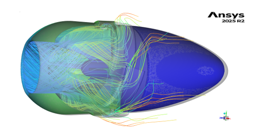
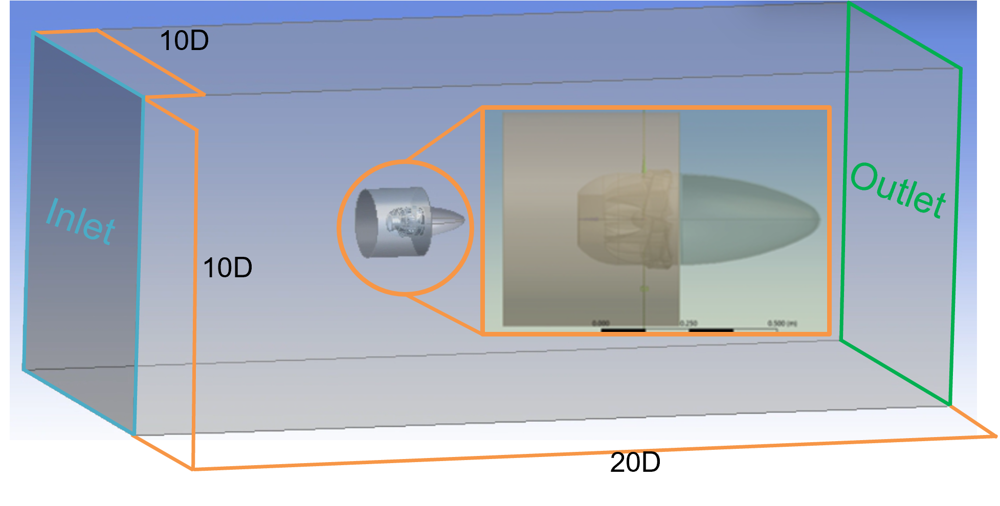
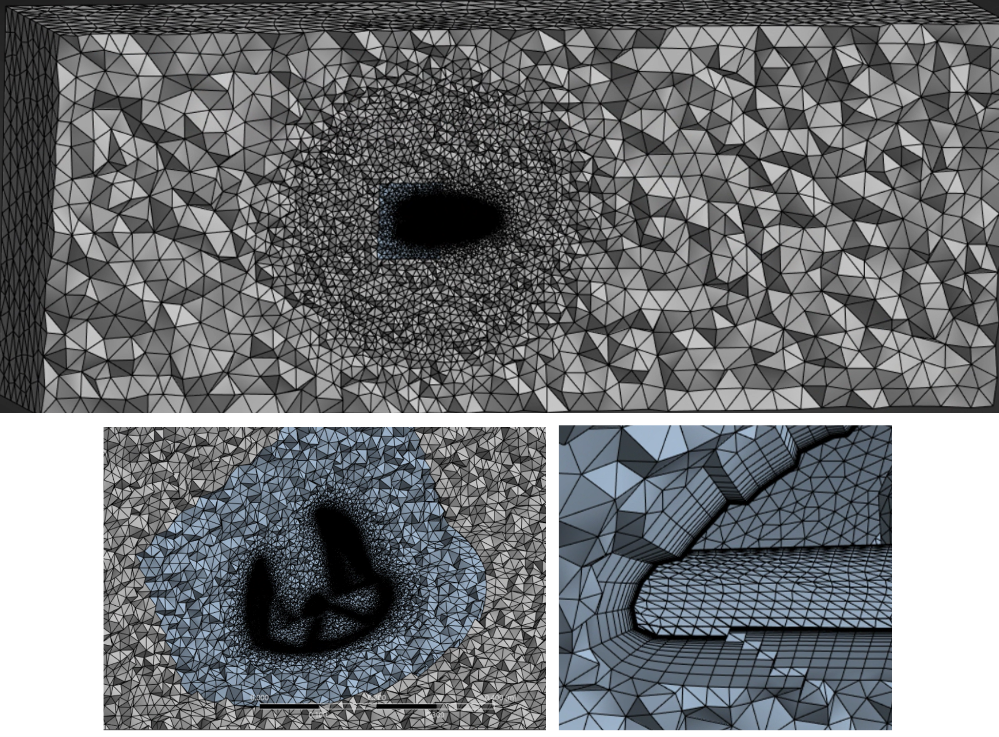
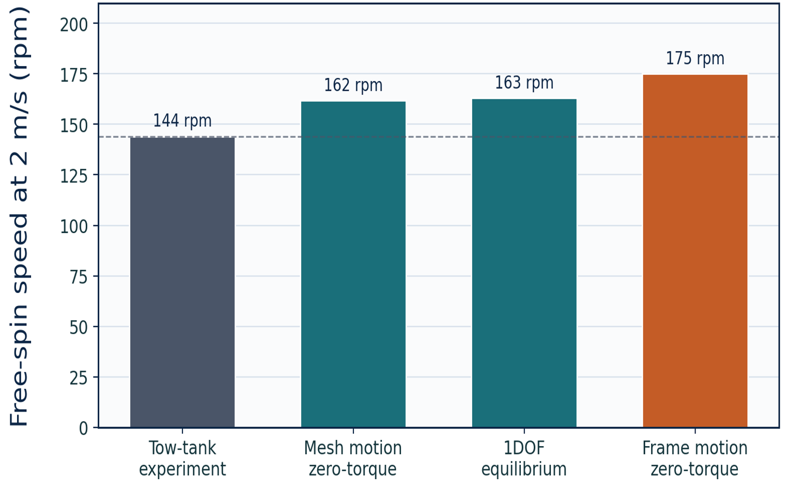
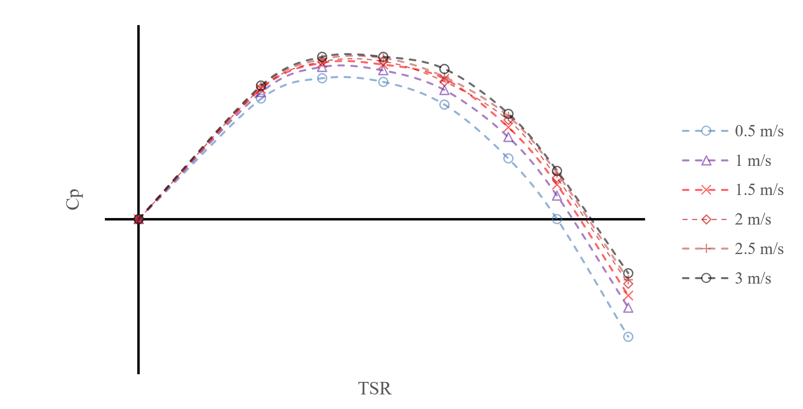
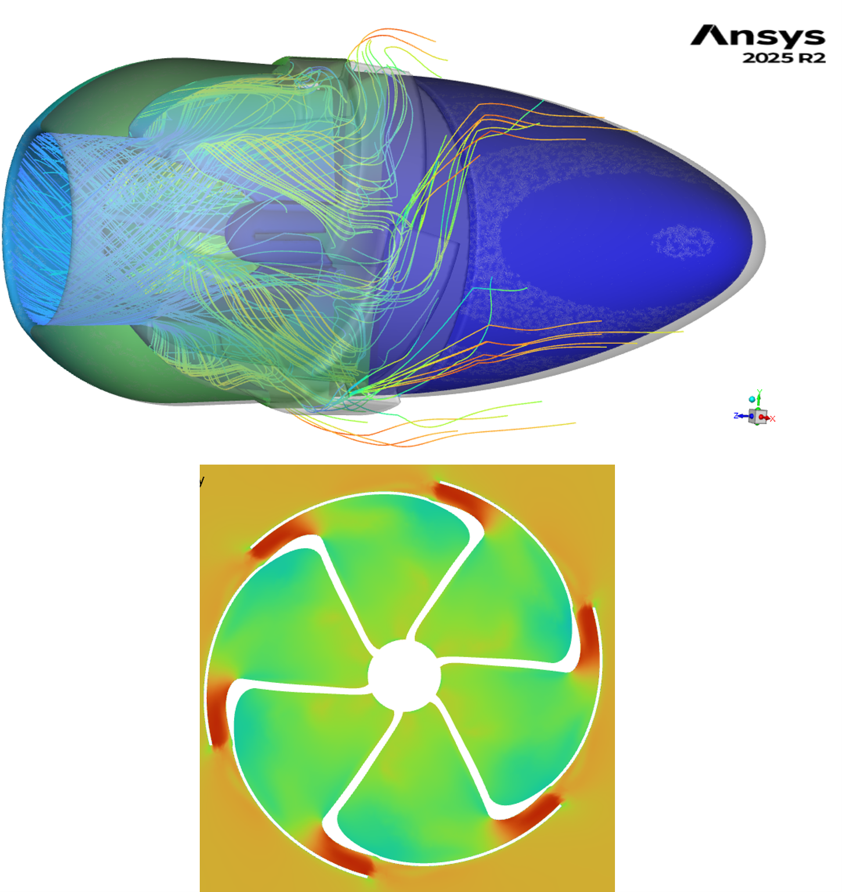

Tidal-stream energy offers predictable, high-density renewable power, but most existing devices rely on conventional blade lift or drag mechanisms. This thesis investigates a novel enclosed turbine that generates torque through internal flow redirection and tangential nozzle discharge — a reaction-based approach rather than direct blade loading.
Building on earlier locked-rotor CFD and tow-tank testing, the study develops a transient rotating CFD methodology to capture the turbine's real operating behaviour, including its performance response, free-spinning equilibrium, and the flow mechanisms governing its efficiency.

A 3D transient CFD model of the full turbine was developed in ANSYS Fluent, using three complementary rotational treatments:
Frame Motion (MRF): Used for the performance sweep, solving the flow in a rotating reference frame with Coriolis and centripetal terms added to the momentum equation:
Mesh Motion (sliding mesh): Physically rotates the mesh to resolve the changing nozzle–chamber geometry, used for detailed flow-field analysis.
1DOF Dynamic Mesh: Couples the fluid solver to a rigid-body rotational equation, letting the rotor accelerate freely under hydrodynamic torque:
Turbulence was modelled with the k-ω SST closure, blending near-wall k-ω behaviour with freestream k-ε accuracy via the blending function \(F_1\).
The complex internal geometry — curved nozzle passages, rotating chambers, and fine features — was meshed with unstructured tetrahedra, locally refined near the turbine and in the near-wake region.
Prism inflation layers resolved the boundary layer, with first-cell height sized from the target wall resolution:
A target of \(y^+ \approx 2\) was used, resolving the boundary layer directly rather than relying on wall functions. Mesh independence was assessed across a wide range of cell counts, with discretisation uncertainty quantified using non-monotonic (order-free) Grid Convergence Index treatment.


The model was verified through mesh, timestep, domain blockage, y+, rotational convergence, and rotor moment-of-inertia studies, with internal consistency checks (angular momentum vs pressure-force torque) confirming the torque monitor captured the intended quantity.
Validation against two independent benchmarks — free-spinning rotational speed from tow-tank testing and stationary torque from the turbine's patent — showed reasonable agreement, with differences physically explained by drivetrain losses and the simplified nature of the patent's analytical formulation.
Free-spinning simulations predicted an equilibrium speed in close qualitative agreement with the measured tow-tank value, with the discrepancy attributable to bearing friction, gearbox losses, and generator drag absent from the CFD model.
The turbine's hydrodynamic performance was characterised through its power coefficient–tip-speed ratio relationship:
Simulations across a range of freestream velocities captured the full Cp–TSR response, identifying the peak operating region and the decline toward the natural no-load speed. Peak efficiency increased monotonically with flow speed, consistent with Reynolds-number-dependent internal passage losses.
Free-spinning equilibrium speeds were predicted across the velocity range, providing a full operating envelope for the turbine.

Detailed flow-field analysis using the sliding-mesh formulation identified four main performance-limiting mechanisms:
Internal pressure, velocity, and mass-flow data were used to link nozzle discharge behaviour and stator pressure redistribution to overall torque generation, providing a clear picture of where energy is lost and how the geometry could be optimised.
This study delivered a verified transient CFD framework for a novel reaction-based tidal turbine, characterising its performance across a range of operating conditions and identifying the key flow mechanisms limiting efficiency.
The work provides a robust baseline for future geometric optimisation and experimental validation, with recommendations including refinement of the nozzle geometry, investigation of alternative stator configurations, and extended experimental campaigns to reduce validation uncertainty.

The full thesis may be shared under a non-disclosure agreement, subject to agreement from all parties involved.
Contact for Access